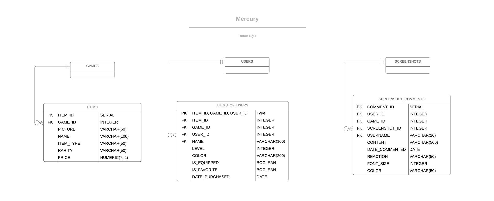

Parts Implemented by Lütfi Baran Uğur¶
Database Design¶
For this project, I have worked on the tables ITEMS, ITEMS_OF_USERS & SCREENSHOT_COMMENTS and their related functions.
{kind=link}
- The “ITEMS” table contains the items available for a game on the website.
- The “ITEMS_OF_USERS” table contains the items owned by a user.
- The “SCREENSHOT_COMMENTS” table contains the comments made on a screenshot.
Code¶
Database Functions¶
-
class
database_baran.Database(dsn)¶ -
add_item(item)¶ Adds an item for a game.
Parameters: item – Item to add to the game.
-
add_item_to_user(item_id, game_id, user_id)¶ Adds an item to a user.
If the user already owns the item, it only increments the level of the item. Otherwise it adds the item to the user. In this case, it also increments the number of items that the user owns for a game specified with a game_id.
Parameters: - item_id – ID of the item.
- game_id – ID of the game.
- user_id – ID of the user.
-
add_screenshot_comment(user_id, game_id, screenshot_id, content, reaction, font_size, color)¶ Adds a comment for a screenshot.
Parameters: - user_id – ID of the user who leaves the comment.
- game_id – ID of the game where the screenshot belongs.
- screenshot_id – ID of the screenshot.
- content – The content of the comment.
- reaction – Reaction of the comment.
- font_size – Font size of the comment.
- color – Color of the comment.
-
check_item_ownership(item_id, user_id)¶ Checks if a user owns an item.
Parameters: - item_id – ID of the item
- user_id – ID of the user
Returns: True if the user owns the item, False otherwise.
-
delete_item(item_id)¶ Deletes an item.
Parameters: item_id – ID of the item to be deleted.
-
delete_item_from_user(item_id, user_id)¶ Deletes an item from a user.
Parameters: - item_id – ID of the item to be deleted.
- user_id – ID of the user that the item will be deleted from.
-
delete_screenshot_comment(comment_id)¶ Deletes a comment from a screenshot.
Parameters: comment_id – ID of the comment to be deleted.
-
edit_item(item_id, new_color, new_status, is_equipped)¶ Updates the attributes of an item.
Parameters: - item_id – ID of the item.
- new_color – The new color attribute of the item.
- new_status – The new status attribute of the item.
- is_equipped – The attribute of an item that specifies if the item is being equipped.
-
get_item(game_id, item_id)¶ Gets a single item for a game.
Parameters: - game_id – ID of the game.
- item_id – ID of the item.
Returns:
-
get_items(game_id)¶ Gets all items for the game.
Parameters: game_id – ID of the game that the items will be listed for. Returns: List of items of the game.
-
get_items_of_user(user_id)¶ Gets all the items that a user owns.
Parameters: user_id – ID of the user. Returns: List of items that the user owns.
-
get_screenshot_comments(game_id, screenshot_id)¶ Gets all of the comments for a screenshot.
Parameters: - game_id – ID of the game.
- screenshot_id – ID of the screenshot.
Returns: List of comments for the screenshot.
-
update_item(item)¶ Updates an item.
Parameters: item – An instance of the Item class that is used to update the existing game.
-
update_screenshot_comment(comment_id, user_id, game_id, screenshot_id, content, reaction, font_size, color)¶ Edits a screenshot comment.
Parameters: - comment_id – ID of the comment to be edited.
- user_id – ID of the user who left the comment.
- game_id – ID of the game.
- screenshot_id – ID of the screenshot.
- content – Edited content for the comment.
- reaction – Edited reaction for the comment.
- font_size – Edited font size for the comment.
- color – Edited color for the comment.
-
Server Functions¶
-
class
server_baran.Server¶ -
item_add_page(game_id)¶ Serves the item adding page for the admin and handles adding an item to the database.
If the request method is “POST”, then tries to create an instance of Item which will be added to the database and displays the result page, if any exception is raised, then refreshes the current page without any database operations.
Parameters: game_id – ID for the game that the item is to be added Returns: Item adding page or the result page
-
item_edit_page(item_id)¶ Serves the item editing page for admins.
If the method is “POST”, then gets item attributes from the request form and edits the item in the database according to those attributes and displays the result page. Otherwise, displays the item editing page.
Parameters: item_id – ID of the item to be edited Returns: Editing page or result page
-
item_edit_result_page()¶ Serves the result page for item editing. :return: Item edit result page
-
item_purchase_page(game_id, item_id)¶ Serves the page for purchasing an item.
Parameters: - game_id – ID of the game to which the item belongs
- item_id – ID of the item to be purchased
Returns: Item purchase page
-
item_purchase_result_page(item_id)¶ Serves the resulting page after the user purchases (or levels up) an item.
Parameters: item_id – ID of the item purchased (or leveled up) Returns: Item purchasing result page
-
item_update_page(game_id, item_id)¶ Serves the item updating page for the admin and handles updating an item in the database.
If the request method is “POST”, then tries to create an instance of Item which will be used to update the database and displays the result page. if any exception is raised, then refreshes the current page without any database operations.
Parameters: - game_id – ID of the game for which the item will be updated
- item_id – ID of the item to be updated
Returns: Item updating page or the result page
-
screenshot_comment_edit_page(game_id, screenshot_id, comment_id)¶ Serves the comment editing page for a screenshot.
If the method is “POST”, then gets the attributes of the comment from the request form and updates the comment in the database and displays the result page. Otherwise, displays the comment editing page.
Parameters: - game_id – ID of the game from where the screenshot is taken
- screenshot_id – ID of the screenshot for which the comment is made
- comment_id – ID of the comment.
Returns: Screenshot comment editing page or the result page
-
screenshot_comment_edit_result_page(game_id, screenshot_id)¶ Serves the result of the comment editing page
Parameters: - game_id – ID of the game from where the screenshot is taken
- screenshot_id – ID of the screenshot for which the comment is edited
Returns: Screenshot comment editing result page
-